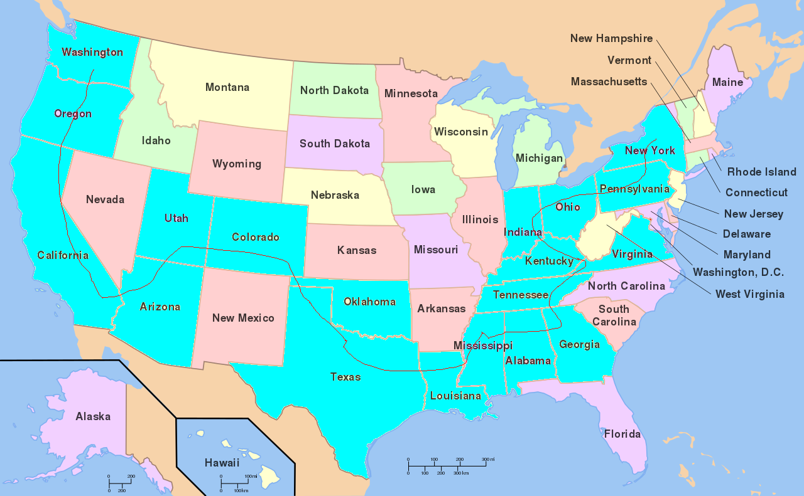

Solution: Road Trip
Answer: NORTHEASTER
Written by Jakob Weisblat
Solvers are given a list of travelogue entries. Each entry clues 2 things, one of which is a city. However, the city is underspecified. For example:
This clue does not uniquely specify a city. However, solvers will eventually notice that the second thing clued in each entry is named for a state. For example, this entry clues INDIANA JONES, and the only city in Indiana founded in 1821 is Indianapolis. Here is a list of clues and the things they reference:
| Entry | State Phrase | City |
|---|---|---|
| On the next leg of our journey, we visited a city that has had a rural postal route since before 1900. While there, we met a Pulitzer Prize-winning playwright. | TENNESSEE Williams | Atoka |
| Today, we went to a city named for a desert phenomenon. We had some drinks in large cans. | ARIZONA Iced Tea | El Mirage |
| On our way to a major city on a lake, we drove past the White House. | PENNSYLVANIA Ave. | Erie |
| Today, in a city where a well-known athletic apparel company was born, we played a classic video game. | OREGON Trail | Eugene |
| Today we rafted down a river passing through a big canyon. After that, we went to a city whose name is the surname of a Harry Potter character. | COLORADO River | Evans |
| Today we visited a city named for a former president. While there, we saw a performance by an R&B band. They were pretty excellent! | OHIO Players | Garfield Heights |
| Today we met an archaeologist in a city founded in 1821. | INDIANA Jones | Indianapolis |
| We saw an artist painting some flowers today in a city sharing its name with a point in physics. | GEORGIA O'Keeffe | LaGrange |
| Today we visited a city that was ranked as one of the top 5 Best Places to be a Kid on Christmas. We saw a folk music performance by a musician born in 1935. Can you believe it?! | UTAH Phillips | Logan |
| Today we visited a suburb that shared a word with the major city it is near. They were putting on a musical! | OKLAHOMA! | Midwest City |
| We arrived today in a historic coal mining suburb of a major city. While there, we read a short story about a person who fell asleep. The story made me sleepy but the author was a very interesting fellow. Over the course of this journey, we saw a lot of amazing things, but nothing quite as impressive as something we encountered at the very beginning, before we started our trip – can you guess what it is? | WASHINGTON Irving | Newcastle |
| Today, we met a british writer in a city whose flag has a yellow stripe. | VIRGINIA Woolf | Norfolk |
| We read about an important land acquisition in US history today in a city with 5 vowels and 4 consonants. I'm still not quite sure how to pronounce it. | LOUISIANA Purchase | Opelousas |
| Today we visited a city of population ~60k. We saw a horse race! | KENTUCKY Derby | Owensboro |
| It took but a split second to start our journey in a city with a minor league baseball team that has existed for over 90 years. | NEW YORK Minute | Rochester |
| We had some rather thick garlic bread today when we visited an alliterative city named after a geologic formation. | TEXAS Toast | Round Rock |
| Today we had a drink containing Amaretto in the county seat of Dallas County. | ALABAMA Slammer | Selma |
| We picked up some delicious chocolatey desserts on our way to visit the birthplace of my favorite musician - I’m really excited to see this place and I hope it’s as cool as these desserts were good! | MISSISSIPPI Mud Pie | Tupelo |
| We had some delicious sushi today in a city 60 miles west of a very large city. | CALIFORNIA Roll | Ventura |
Notably, these cities are in alphabetical order. This implies we need to reorder. As it happens, there is only one way to traverse these states in Road Trip order - that is, enter each one only once and always exit into the next state. This, combined with flavor suggesting we start in New York and end in Washington, clues the following order:
So we get the following city order:
1. Rochester, New York
2. Erie, Pennsylvania
3. Garfield Heights, Ohio
4. Indianapolis, Indiana
5. Owensboro, Kentucky
6. Norfolk, Virginia
7. Athens, Tennessee
8. LaGrange, Georgia
9. Selma, Alabama
10. Tupelo, Mississippi
11. Opelousas, Louisiana
12. Round Rock, Texas
13. Midwest City, Oklahoma
14. Evans, Colorado
15. Logan, Utah
16. El Mirage, Arizona
17. Ventura, California
18. Eugene, Oregon
19. Newcastle, Washington
The clue for the final stop, Newcastle, also mentions an additional hint about the answer:
Taking in hand the cluephrase spelled by the cities, REGIONAL STORM ELEVEN, and the clue that this comes from before New York, we get the answer, NORTHEASTER.
Author’s Notes
This started as a crossword contest idea - I was going to have theme entries like RIP VAN WINKLE or TRIPLE CROWN, and then the four theme entries' related states would spell the answer. Unfortunately, I couldn't come up with any set that had a good answer. At that point, this became a GPH puzzle. I like how it's turned out.
Some clues that didn't make it in for various reasons:- We narrowly avoided being stabbed by a heavy dagger today while in a city formerly known as the "City of Rainbows".
- We met a chicken today in a city in a city whose coordinates are ??°46' N, ??°27' W
- We enjoyed a delicious frozen dessert today on our way to a city associated with a May 2009 wildfire.
- We crossed paths with the Continental army today in a city which was awared a 5-star water quality rating by the NRDC in 2011.
- We watched a performance by a 2000s teen idol today in a city which shares its name with an elite university.